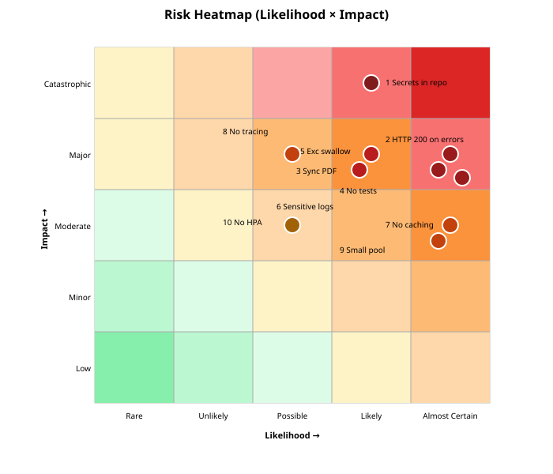

Risk Synthesis
- 4 critical risks (red), 4 high (orange), 2 medium (yellow).
- Highest exposure: secrets in repo + HTTP-200-on-error blinds operators.
- 0% test coverage in DigitalCardServiceImpl (no
DigitalCardServiceImplTest.javafound).

Top 10 Risks
| # | Risk | L | I | Evidence | Mitigation |
|---|---|---|---|---|---|
| 1 | Plaintext secrets in repo | High | Catastrophic | application-local1.properties:4,25,54 | Vault + sealed secrets |
| 2 | HTTP 200 returned on errors | Almost Certain | Major | ApiExceptionHandler.java:48,98 | Map proper status codes |
| 3 | Synchronous PDF blocks throughput | Almost Certain | Major | PDFCardServiceImpl.java:342 | Async worker + queue |
| 4 | Low test coverage | Almost Certain | Major | no test for DigitalCardServiceImpl | Coverage gate ≥80% |
| 5 | Exception swallowing in callbacks | Likely | Major | controller:56,71,92 | Re-throw or DLQ |
| 6 | Sensitive data in logs (DB user) | Likely | Major | controller:93 | Remove log; PII filter |
| 7 | No caching → upstream pressure | Almost Certain | Moderate | no @EnableCaching | Caffeine + Redis L2 |
| 8 | No distributed tracing | Possible | Major | no OTel deps | OpenTelemetry agent |
| 9 | Small thread pool (5) | Almost Certain | Moderate | DigitalCardApplication.java:29 | Tune; separate executor |
| 10 | No HPA | Possible | Moderate | no hpa.yaml in helm/ | Add HPA template |
← evidence: security | ← evidence: performance | → Strategy roadmap